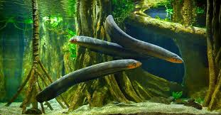

ELECTRIC EEL FACTS

Physical Traits
Long, snake-like body
Dark green or gray
Up to 8 feet long
Habitat
Freshwater rivers and swamps
Amazon & Orinoco basins
Lives in muddy, slow-moving waters

Diet
Fish, crustaceans
Small mammals
Uses electricity to stun prey